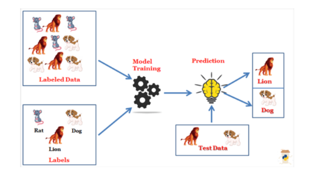
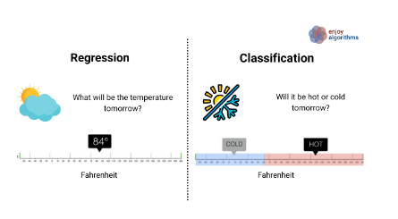

# Memuat paket yang diperlukan
library(stats)
library(readxl)
# Membaca data dari file Excel
data <- read_excel("data/data_regresilinear.xlsx")
head(data) # Menampilkan beberapa baris pertama dari data
# Melakukan regresi linear sederhana
model <- lm(IRR ~ `Debt Ratio` + `Current Ratio` + TA, data = data) # Gunakan backticks untuk nama variabel dengan spasi
summary(model) # Menampilkan ringkasan modelTopik 10 | Regresi
1. Regression
Regresi (regression) adalah suatu teknik statistik yang digunakan untuk memahami hubungan antara satu atau lebih variabel independen (dikenal sebagai prediktor) dan variabel dependen (dikenal sebagai respons). Tujuan utama dari analisis regresi adalah untuk memodelkan dan memahami sejauh mana perubahan dalam variabel independen memengaruhi variabel dependen.
Regresi digunakan dalam berbagai bidang seperti ilmu sosial, ekonomi, ilmu alam, kedokteran, dan bisnis untuk menjelaskan atau memprediksi hubungan antara variabel-variabel yang diamati.


1.1 Contoh Kasus
Pada data ini (input data excel), terdapat empat variabel yang terdiri dari tiga variabel independen dan satu variabel dependen. Variabel independennya adalah Rasio Hutang (Debt Ratio), Rasio Lancar (Current Ratio), dan Total Assets. Sementara itu, variabel dependennya adalah Keputusan Investasi. Dalam konteks ini, peneliti tertarik untuk mengamati pengaruh ketiga variabel tersebut terhadap variabel dependen menggunakan Regresi Linear
Contoh code Regresi Linear :
Hasil :
 - Copy.png)
Penjelasan :
Residuals (Sisa)
- Residuals mengukur perbedaan antara nilai aktual dan nilai yang diprediksi oleh model regresi. Nilai minimum, kuartil pertama (1Q), median, kuartil ketiga (3Q), dan nilai maksimum dari residual menunjukkan seberapa baik model kita memperkirakan data. Semakin kecil nilai residual, semakin baik model kita dalam memprediksi data.
Koefisien
Intercept (Konstanta): Nilai estimasi intercept pada garis regresi. Ini adalah nilai prediksi ketika semua variabel independen bernilai nol.
Nilai t-statistik dan p-value digunakan untuk menguji signifikansi koefisien. Jika p-value rendah (biasanya < 0.05), kita dapat menyimpulkan bahwa koefisien tersebut signifikan secara statistik. Pada gambar ini ketiga variabel yaitu Current Ratio, Debt Ratio dan Total Aset (TA) tidak mempengaruhi Keputusan Investasi dikarenakan nilainya kurang dari 0.5
Residual Standard Error (RSE)
- RSE mengukur seberapa baik model kita memprediksi data. Semakin rendah nilai RSE, semakin baik model kita dalam memperkirakan nilai variabel dependen. Pada kasus ini memiliki nilai 0.1504 yang dimana standar model dikatakan baik itu nilainya dibawah 0.05. Sehingga bisa disimpulkan model ini kurang baik dalam memprediksi hasil akhir
Multiple R-squared dan Adjusted R-squared
Multiple R-squared mengukur seberapa baik variabel independen menjelaskan variasi dalam variabel dependen. Nilai ini berkisar antara 0 hingga 1, dan semakin tinggi nilainya, semakin baik model kita.
Adjusted R-squared memperhitungkan jumlah variabel independen dan mengoreksi multiple R-squared untuk kompleksitas model. Nilai ini lebih konservatif dan menghindari overfitting.
F-statistik
- F-statistik digunakan untuk menguji signifikansi keseluruhan model regresi. Jika p-value rendah, kita dapat menyimpulkan bahwa model secara keseluruhan signifikan. Pada kasus ini nilai F dilihat pada p-value yang bernilai 0.3646 yang dimana syarat dikatakan bawah model kesuluruhan varibel Independen mempengaruhi variabel Dependen harus dibawah 0.05
Kesimpulan Kasus
Setelah melakukan analisis dengan menggunakan Regresi Linear, dapat disimpulkan bahwa ketiga variabel independen, yaitu Debt Ratio (X1), Current Ratio (X2), dan Total Aset (X3), tidak memiliki pengaruh signifikan terhadap variabel dependen, yaitu Keputusan Investasi (Y). Hal ini disebabkan oleh nilai signifikansi yang berada di bawah 0,05.
Selain itu, nilai F-Statistik juga menunjukkan angka di bawah 0,05, yang mengindikasikan bahwa ketiga variabel tersebut belum dapat secara signifikan menjelaskan variabilitas variabel dependen. Dengan demikian, model regresi linear saat ini belum dapat dianggap baik karena variabel independennya tidak mampu mewakili atau memprediksi variabel dependen dengan cukup baik.
2. Regresi Logistik
2.1 Apa itu Regresi Logistik
Regresi logistik adalah sebuah metode statistik yang digunakan untuk memodelkan hubungan antara satu atau lebih variabel independen (biasanya disebut prediktor atau fitur) dengan variabel dependen biner (biasanya disebut variabel respons atau target). Variabel dependen ini hanya memiliki dua nilai atau kategori yang mungkin, misalnya “ya” atau “tidak”, “sukses” atau “gagal”, “benar” atau “salah”.
2.2 Tujuan Regresi Logistik
Tujuan dari regresi logistik adalah untuk memprediksi probabilitas bahwa suatu kejadian atau hasil akan terjadi berdasarkan nilai-nilai dari variabel prediktor yang diberikan. Model regresi logistik menghasilkan koefisien untuk setiap variabel prediktor yang menunjukkan seberapa besar pengaruh variabel tersebut terhadap probabilitas hasil yang diamati.
2.3 Visualisasi Regresi Logistik
.png)
Kurva regresi logistik ditampilkan dalam warna biru.
Bentuk kurva ini adalah S-shaped (mirip huruf “S”).
Dimulai dari Y=0, kemudian naik perlahan, tiba-tiba meningkat di tengah, dan akhirnya mendatar menuju Y=1.
Model ini cocok untuk masalah klasifikasi biner, di mana output berada dalam rentang 0 hingga 1.
2.4 Contoh Kasus Regresi logistik
Pada data ini (input data excel), terdapat empat variabel yang terdiri dari tiga variabel independen dan satu variabel dependen. Variabel independennya adalah kenaikan penjualan, arus kas bebas, dan perencanaan pajak. Sementara itu, variabel dependennya adalah perataan laba. Dalam variabel dependennya menunjukkan, nilai 1 menunjukkan tindakan perataan laba sedangkan nilai 0 menunjukkan ketiadaan tindakan perataan laba. Dalam konteks ini, peneliti tertarik untuk mengamati pengaruh ketiga variabel tersebut terhadap variabel dependen yang bersifat biner.
Code Regression Linear Logistik :
# Memuat paket yang diperlukan
library(stats)
library(readxl)
# Membaca data dari file Excel
dataa <- read_excel("data/data_logistik.xlsx")
head(dataa) # Menampilkan beberapa baris pertama dari data# A tibble: 6 × 4
X1 X2 X3 Y1
<dbl> <dbl> <dbl> <dbl>
1 -0.0125 0.211 0.756 1
2 -0.0492 0.239 0.761 1
3 -0.119 0.242 0.809 1
4 0.389 0.438 0.787 1
5 0.381 0.382 0.786 1
6 -0.188 0.152 1.44 1# Melakukan regresi logistik dengan menggunakan kolom 'income_smoothing' sebagai variabel dependen
# dan kolom 'X1', 'X2', dst sebagai variabel independen
logistic_model <- glm(Y1 ~ X1 + X2 + X3, data = dataa, family = binomial)
# Menampilkan ringkasan model
summary(logistic_model)
Call:
glm(formula = Y1 ~ X1 + X2 + X3, family = binomial, data = dataa)
Coefficients:
Estimate Std. Error z value Pr(>|z|)
(Intercept) -2.5806 0.6709 -3.847 0.000120 ***
X1 3.0130 0.7970 3.781 0.000157 ***
X2 3.6044 1.4433 2.497 0.012514 *
X3 0.5108 0.5781 0.884 0.376943
---
Signif. codes: 0 '***' 0.001 '**' 0.01 '*' 0.05 '.' 0.1 ' ' 1
(Dispersion parameter for binomial family taken to be 1)
Null deviance: 160.48 on 129 degrees of freedom
Residual deviance: 129.44 on 126 degrees of freedom
AIC: 137.44
Number of Fisher Scoring iterations: 5# Melakukan prediksi pada dataset yang sama
predicted <- predict(logistic_model, type = "response")
# Konversi hasil prediksi menjadi kelas (0 atau 1) berdasarkan threshold 0.5
predicted_class <- ifelse(predicted > 0.5, 1, 0)
# Menampilkan confusion matrix
conf_matrix <- table(predicted_class, dataa$Y1)
conf_matrix
predicted_class 0 1
0 87 19
1 3 21# Menghitung akurasi
accuracy <- sum(diag(conf_matrix)) / sum(conf_matrix)
cat("Akurasi:", accuracy, "\n")Akurasi: 0.8307692 # Menghitung precision, recall dan F1 Score
precision <- conf_matrix[2,2] / sum(conf_matrix[,2])
recall <- conf_matrix[2,2] / sum(conf_matrix[2,])
f1_score <- 2*(precision * recall)/(precision+recall)
cat("Precision sebesar ", precision, "\n" )Precision sebesar 0.525 cat("Recall sebesar ", recall, "\n" )Recall sebesar 0.875 cat("F1 Score sebesar ", f1_score, "\n" )F1 Score sebesar 0.65625 Penjelasan :
Koefisien
- Dalam analisis regresi, koefisien menggambarkan pengaruh variabel prediktor terhadap variabel target.
- Dalam gambar, terdapat empat koefisien yang ditampilkan:
Intercept: Koefisien untuk nilai (X) ketika semua variabel prediktor lainnya nol.
(X_1), (X_2), dan (X_3): Koefisien untuk masing-masing variabel prediktor.
- Setiap koefisien memiliki estimasi (nilai perkiraan), kesalahan standar, nilai (z), dan nilai (p) ((Pr(>|z|)))
Signifikansi
Nilai (p) ((Pr(>|z|))) menunjukkan seberapa signifikan pengaruh koefisien terhadap variabel target.
Nilai (p) yang lebih kecil menunjukkan signifikansi yang lebih tinggi.
Tanda asterisk (*, **, atau ***) menunjukkan tingkat signifikansi (misalnya, *** berarti sangat signifikan). Yang artinya X1 dan X2 berpengaruh signifikan terhadap Y
Kelayakan Model
- Precision menunjukkan proporsi dari prediksi positif yang benar terhadap total prediksi positif. Nilai 0,525 menunjukkan bahwa sekitar 52,5% dari semua prediksi positif yang dilakukan oleh model benar-benar positif.
- Recall (juga dikenal sebagai sensitivitas) mengukur seberapa baik model dapat mengidentifikasi kelas positif. Nilai 0,875 menunjukkan bahwa sekitar 87,5% dari semua sampel yang sebenarnya positif berhasil diidentifikasi oleh model.
- F1 score adalah rata-rata harmonis dari precision dan recall, memberikan gambaran keseluruhan tentang kinerja model. Nilai 0,65625 menunjukkan keseimbangan antara precision dan recall. Semakin tinggi nilai F1 score, semakin baik keseimbangan antara precision dan recall.
- Akurasi merupakan proporsi dari prediksi yang benar secara keseluruhan. Nilai 0,8307692 menunjukkan bahwa sekitar 83,08% dari semua prediksi yang dibuat oleh model adalah benar.
Kesimpulan Kasus
Setelah menganalisis data dengan menggunakan Regresi Logistik, dapat disimpulkan bahwa variabel Kenaikan Penjualan (X1) dan Arus Kas Bebas (X2) memiliki pengaruh signifikan terhadap Perataan Laba (Y), ditunjukkan oleh nilai signifikansi masing-masing di bawah 0.05, yaitu 0.001 dan 0.01. Sementara itu, variabel Perencanaan Pajak (X3) tidak memiliki pengaruh signifikan terhadap Perataan Laba (Y), karena nilai signifikansinya lebih dari 0.05, yaitu sebesar 1. Secara keseluruhan, model memiliki kelayakan yang baik, karena akurasi mencapai 83,08%, yang menunjukkan bahwa sampel dalam uji latih model dapat diprediksi dengan benar.